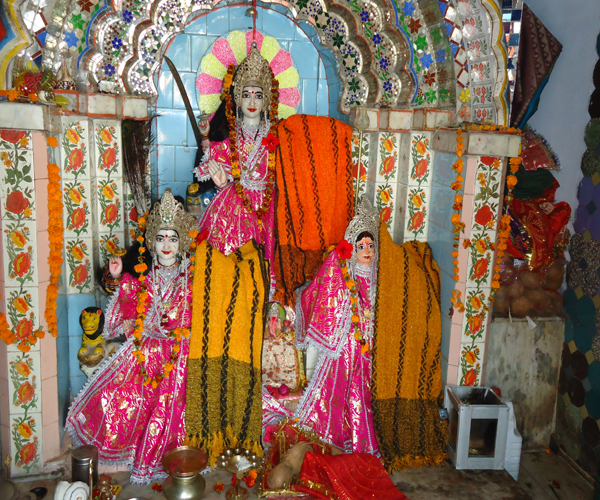
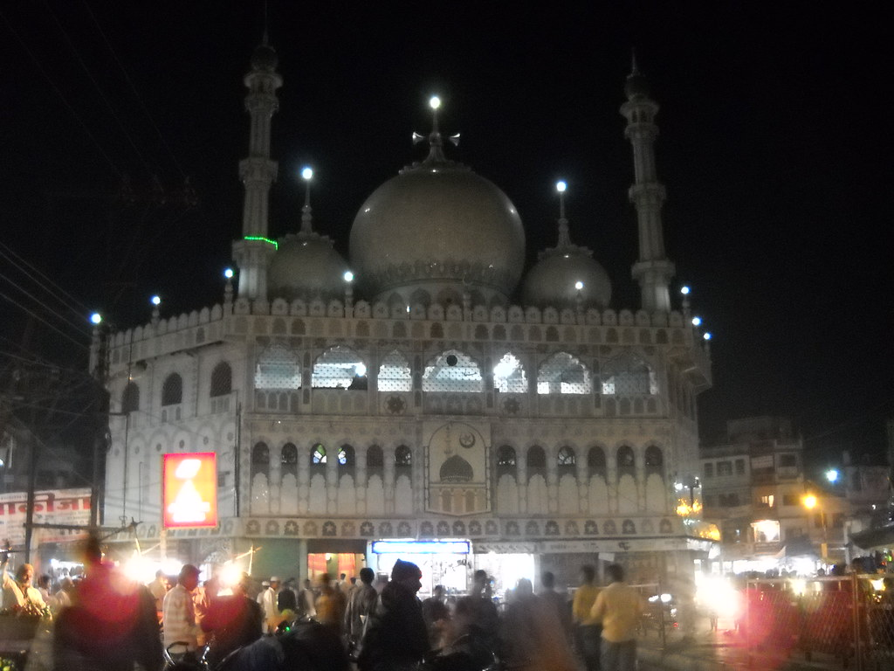

Religious Place
सागर शहर में अनेक प्रकार के मंदिर स्थपित है। प्रत्येक समुदाय अपने धार्मिक कार्यक्रम मनाने, जुलूस निकलने आदि के लिये स्वतंत्र है। यहाँ प्रत्येक त्यौहार एकता के साथ मनाये जाते है। सावन में जब मंदिर में झूले में भगवान विराजमान होते है तो सागर का नज़ारा वृन्दावन की तरह, दुर्गा नवमी में कलकत्ता की तरह, और गणेश उत्सव में महाराष्ट्र की तरह होता है। चारो समुदाय जैसे- हिंदु, जैन, मुस्लिम व ईसाई। सभी के आराधना स्थल स्वतंत्र रूप से स्थापित है जो कि सागर की शान को बढाते है एवम अत्यंत आकर्षक लगते है।


Baghraj Mandir
Baheriya Bade Shankar Ji
Balaji Mandir
Chakraghat Mandir
Dada Darwar Mandir
Hanuman Mandir
Bhagyodaya Teerth Jain Mandir
Kakaganj Jain Mandir
Siddha Dham Mandir
Parasnath Jain Mandir
Imam Masjid